Code
# load libraries
library(tidyverse)
library(stars)
library(dplyr)
library(tmap)
library(terra)
library(sf)
library(here)Impacts of extreme weather in metropolitan areas
# load libraries
library(tidyverse)
library(stars)
library(dplyr)
library(tmap)
library(terra)
library(sf)
library(here)v5_before <-read_stars(here("data","VNP46A1","VNP46A1.A2021038.h08v05.001.2021039064328.tif"))
v6_before <-read_stars(here("data","VNP46A1","VNP46A1.A2021038.h08v06.001.2021039064329.tif"))
v5_after <-read_stars(here("data","VNP46A1","VNP46A1.A2021047.h08v05.001.2021048091106.tif"))
v6_after <-read_stars(here("data","VNP46A1","VNP46A1.A2021047.h08v06.001.2021048091105.tif"))roads <-st_read(here("data","gis_osm_roads_free_1.gpkg"), query= "SELECT * FROM gis_osm_roads_free_1 WHERE fclass='motorway'", quiet = TRUE)houses <- st_read(here("data","gis_osm_buildings_a_free_1.gpkg"), query= "SELECT * FROM gis_osm_buildings_a_free_1
WHERE (type IS NULL AND name IS NULL)
OR type in ('residential', 'apartments', 'house', 'static_caravan', 'detached')", quiet = TRUE)census <- st_read(here("data","ACS_2019_5YR_TRACT_48_TEXAS.gdb"),layer = "ACS_2019_5YR_TRACT_48_TEXAS", quiet = TRUE)
income <- st_read(here("data","ACS_2019_5YR_TRACT_48_TEXAS.gdb"),layer = "X19_INCOME", quiet = TRUE)if(st_crs(v5_before) == st_crs(v6_before)){ # set warning to check crs' match after transforming
print("crs match")
} else {
warning("crs do not match!")
}[1] "crs match"if(st_crs(v6_after) == st_crs(v5_after)){ # set warning to check crs' match after transforming
print("crs match")
} else {
warning("crs do not match!")
}[1] "crs match"# Mosaic the rasters
lights_0207 <- st_mosaic(v5_before, v6_before)
# Create a raster template with resolution 0.01
rast_template_0207 <- st_as_stars(lights_0207, dx = 0.01, dy = 0.01)
# Resample the mosaic to the new raster template
lights_0207_resampl <- st_warp(lights_0207, rast_template_0207,
method = "near")# Mosaic the rasters
lights_0216 <- st_mosaic(v5_after, v6_after)
# Create a raster template with resolution 0.01
rast_template_0216 <- st_as_stars(lights_0216, dx = 0.01, dy = 0.01)
# Resample the mosaic to the new raster template
lights_0216_resampl <- st_warp(lights_0216, rast_template_0216, method = "near")map1 <- tm_shape(lights_0207_resampl) +
tm_raster(palette = hcl.colors(8,"inferno"),
style = "order",
legend.show = FALSE) +
tm_layout(fontfamily = "courier",
main.title = "Light intensity map, Texas Feb 7, 2021",
main.title.size = 0.8,
main.title.fontface = "bold",
title = expression("Light intensity (nW cm"^-2 * "sr"^-1 * ")"),
outer.margins = c(0.01,0.04,0.01, 0.04),
inner.margins = 0,
legend.outside = TRUE) +
tm_graticules(col = "black",
lwd = 0.5,
alpha = 0.5) +
tm_add_legend(type = "fill",
col = hcl.colors(8,"inferno"),
labels = c(-80000,-60000,-40000,-20000,0,20000,40000,60000),
border.alpha = 0.2)
# Change this to add legend and hide this ^ legend.
# legend.outside.size = 0.15,
map1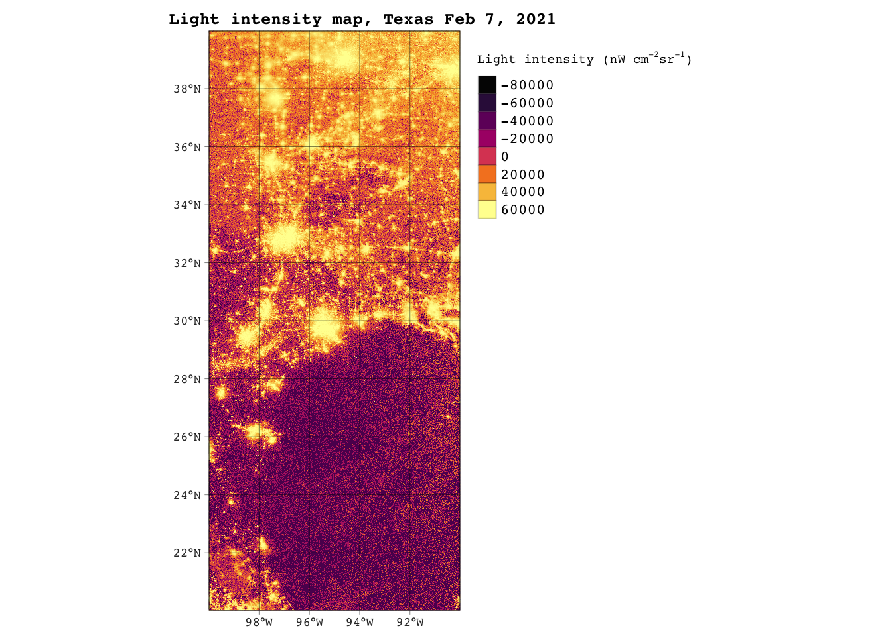
map2 <- tm_shape(lights_0216_resampl) +
tm_raster(palette = hcl.colors(10,"inferno"),
style = "order",
legend.show = FALSE) +
tm_layout(fontfamily = "courier",
main.title = "Light intensity map, Texas Feb 16, 2021",
main.title.size = 0.8,
main.title.fontface = "bold",
outer.margins = c(0.01,0.04,0.01, 0.04),
inner.margins = 0,
legend.outside = TRUE) +
tm_graticules(col = "black",
lwd = 0.5,
alpha = 0.5) +
tm_add_legend(title = expression("Light intensity (nW cm"^-2 * "sr"^-1 * ")"),
type = "fill",
col = hcl.colors(8,"inferno"),
labels = c(-80000,-60000,-40000,-20000,0,20000,40000,60000),
border.alpha = 0.2)
map2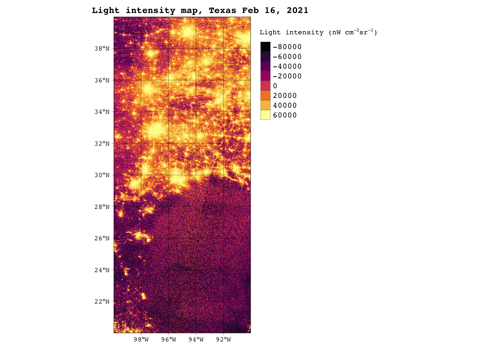
difference <- lights_0207-lights_0216 # find difference in lights between feb 07 and feb 16
# map the difference in light intensity between feb 7-feb 16
map3 <- tm_shape(difference) +
tm_raster(palette = hcl.colors(10,"Grays"),
style = "pretty",
midpoint = NA,
contrast = c(0.7,0.1),
legend.show = TRUE,
title = expression("Light intensity (nW cm"^-2 * "sr"^-1 * ")")) +
tm_layout(fontfamily = "courier",
fontface = "bold",
main.title = "Light intensity difference in Texas between Feb 7 - Feb 16, 2021",
main.title.size = 0.8,
main.title.fontface = "bold",
title.size = 0.8,
outer.margins = c(0.01,0.04,0.01, 0.04),
inner.margins = 0,
legend.outside = TRUE) +
tm_graticules(col = "yellow",
lwd = 0.5,
alpha = 0.5)
map3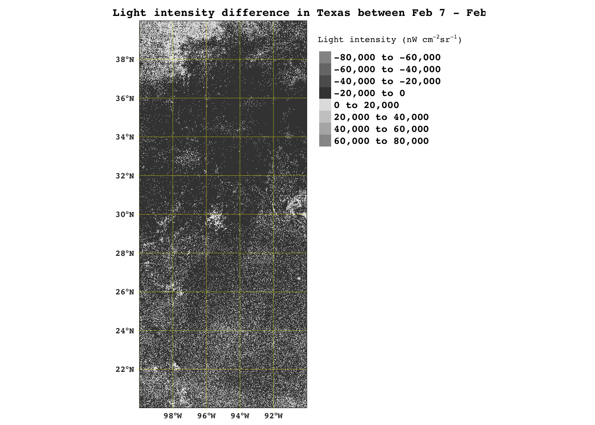
difference[difference < 200] <- NA # assign NA to values <200
# map the blackout where light intensity is less than 200
blackout_map <- tm_shape(difference) +
tm_raster(palette = hcl.colors(10,"Reds"),
style = "cont",
midpoint = NA,
contrast = c(0.9,0.5),
legend.show = TRUE,
title = expression("Change in light intensity (nW cm"^-2 * "sr"^-1 * ")")) +
tm_layout(fontfamily = "courier",
fontface = "bold",
main.title = "Change in light intensity, 2021 Texas blackout",
main.title.size = 0.7,
outer.margins = c(0.01,0.04,0.01, 0.04),
inner.margins = 0,
bg.color = "khaki",
legend.outside = TRUE,
legend.text.size = .5) +
tm_graticules(col = "black",
lwd = 0.5,
alpha = 0.3)
blackout_map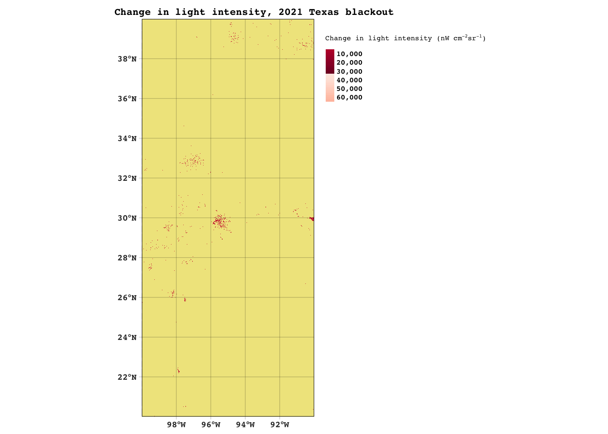
# vectorize blackout mask
blackout_mask_poly <-as.polygons(rast(difference)) %>%
st_as_sf() %>%
st_make_valid()
# map the vectorized mask, see that the blackout is easier to see now
blackout_poly_map <- tm_shape(blackout_mask_poly) +
tm_polygons(border.col = "black",
col = "black",
fil = "black") +
tm_layout(fontfamily = "courier",
fontface = "bold",
main.title = "Change in light intensity, Texas 2021 blackout (poligonized)",
bg.color = "khaki",
outer.margins = c(0.01, 0.04, 0.01, 0.04),
inner.margins = 0,
main.title.fontface = "bold",
main.title.size = 0.85,
legend.title.fontface = "bold",
legend.title.size = 1,
legend.outside = TRUE,
legend.position = c("right","TOP"),
legend.text.size = 0.9) +
tm_graticules(col = "black",
lwd = 0.5,
alpha = 0.5) +
tm_add_legend(type = "fill",
col = "black",
title = expression("Change in light intensity (nW cm"^-2 * "sr"^-1 * ")"))
blackout_poly_map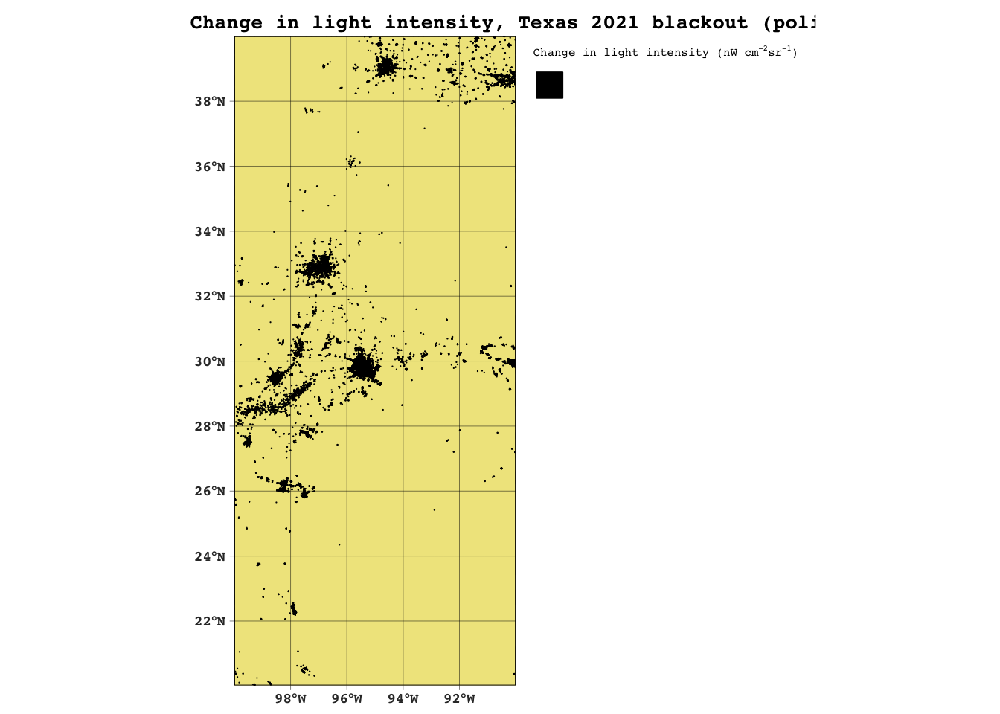
# first create crop of Houston
houston <- st_bbox(c(xmin = -96.5,
xmax = -94.5,
ymax = 30.5,
ymin = 29), crs = st_crs(blackout_mask_poly))
# spatially subset to Houston coordinates
houston_crop <- st_crop(blackout_mask_poly, houston)
# check class of houston_crop
print(class(houston_crop))[1] "sf" "data.frame"# re-project cropped blackout dataset to EPSG:3083
houston_crop <- st_transform(houston_crop,crs = "EPSG:3083")blackout_houston_map <- tm_shape(houston_crop) +
tm_polygons(border.col = "indianred2",
col = "indianred2",
fil = "indianred2") +
tm_layout(fontfamily = "courier",
fontface = "bold",
main.title = "Houston, Texas blackout 2021",
bg.color = "khaki",
outer.margins = c(0.01, 0.04, 0.01, 0.04),
inner.margins = 0,
main.title.fontface = "bold",
main.title.size = 0.85,
legend.title.fontface = "bold",
legend.title.size = 0.8,
legend.position = c("right","TOP")) +
tm_graticules(col = "black",
lwd = 0.6,
alpha = 0.5) +
tm_add_legend(type = "fill",
col = "indianred2",
title = "Blackout")
blackout_houston_map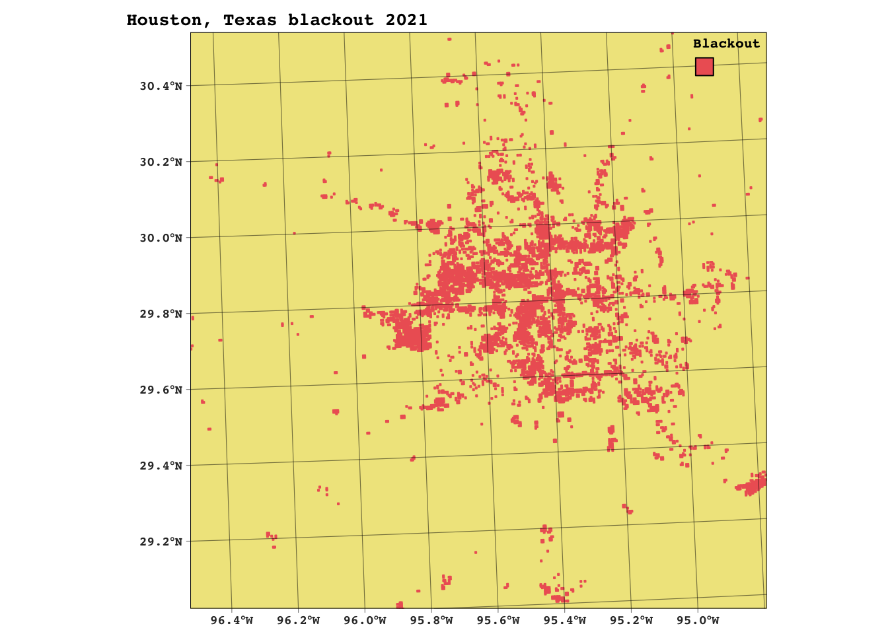
# check units
if(!is.null(st_crs(roads)$units) && st_crs(roads)$units == 'm'){
print("units are meters (m)")
} else {
warning("Check your crs to see if projected or unprojected. You may need to transform to get non-degree units")
}# transform to Projected CRS: NAD83 / Texas Centric Albers Equal Area
roads <- st_transform(roads,crs("EPSG:3083"))
# re-check units after transformation
if(st_crs(roads)$units == 'm'){
print("units are meters (m)")
} else {
warning("well shoot, that transformation did not work!")
}[1] "units are meters (m)"# double check houston_crop matches roads
if(st_crs(houston_crop) == st_crs(roads)){ # set warning to check crs' match after transforming
print("crs match")
} else {
warning("crs do not match!")
} [1] "crs match"# create buffer
highway_buffer_200m <- st_buffer(roads, dist = 200)
# dissolve buffer to make one polygon
highway_buffer_200m <- st_union(highway_buffer_200m)
# show buffers, difference is in line width
no_buffer <- tm_shape(roads) +
tm_lines() +
tm_graticules(col = "black",
lwd = 0.4) +
tm_layout(fontfamily = "courier",
main.title.fontface = "bold",
main.title = "Roads without buffer vs 200m buffer",
main.title.size = 0.9,
bg.color = "khaki") +
tm_add_legend(type = "line",
col = "black",
label = "Highways")
no_buffer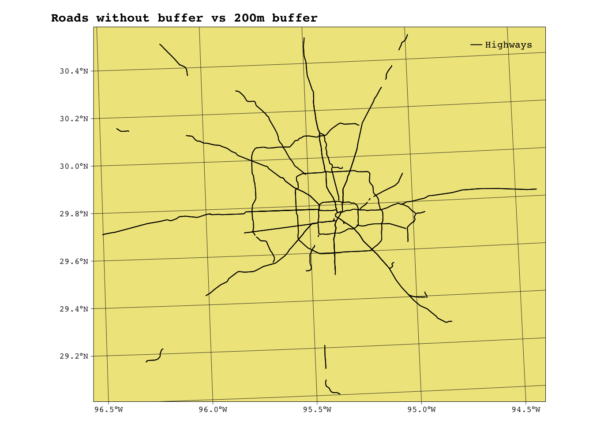
buffered <- tm_shape(highway_buffer_200m) +
tm_polygons(border.col = "indianred2") +
tm_graticules(col = "black",
lwd = 0.4) +
tm_layout(fontfamily = "courier",
bg.color = "khaki") +
tm_add_legend(type = "line",
label = "Highway buffer (200m)",
col = "indianred2",
lwd = 2.55)
buffered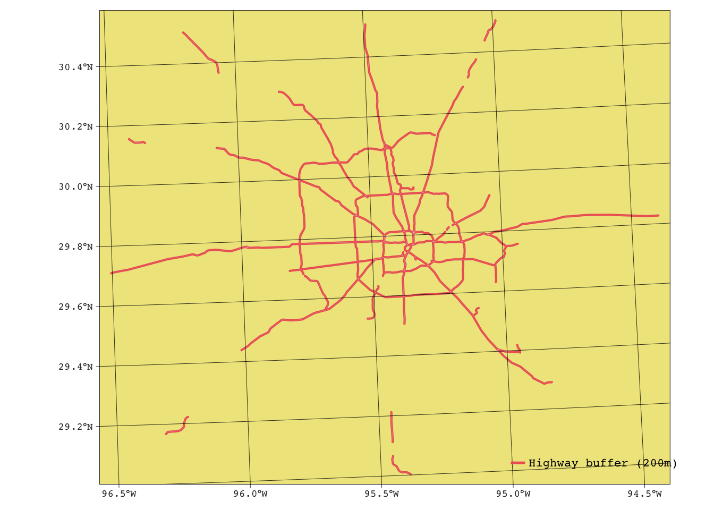
houston_no_highways <-st_difference(houston_crop,highway_buffer_200m)# map the blackout areas 200m away from highways in Houston
houston_blackout_buffered <- tm_shape(houston_no_highways) +
tm_polygons(border.col = "skyblue4",
col = "skyblue4",
fil = "skyblue4") +
tm_layout(fontfamily = "courier",
main.title = "Houston, Texas blackout 2021",
bg.color = "lightcoral",
outer.margins = c(0.01, 0.04, 0.01, 0.04),
inner.margins = 0,
main.title.fontface = "bold",
main.title.size = 0.85,
legend.title.size = 0.8,
legend.outside = TRUE,
legend.outside.position = c("right","TOP")) +
tm_graticules(col = "black",
lwd = 0.5,
alpha = 0.4) +
tm_add_legend(type = "fill",
col = "skyblue4",
labels = "Blackout")+
tm_shape(highway_buffer_200m) +
tm_polygons(border.col = "khaki",
col = "khaki",
fill = "khaki",
lwd = 0.2,
alpha = 0.6) +
tm_add_legend(type = "line",
col = "khaki",
lwd = 3,
labels = "Road buffer (200m)")
houston_blackout_buffered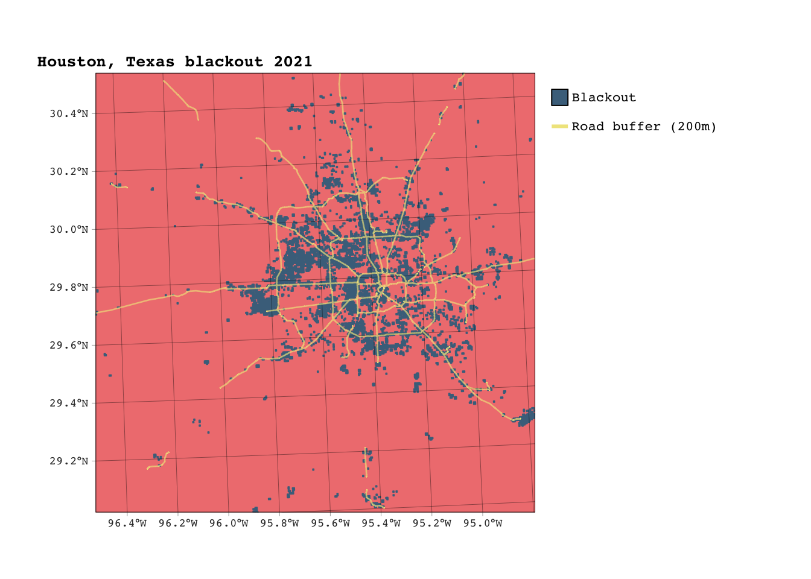
# double check houston_no_highways matches roads
if(st_crs(houston_no_highways) == st_crs(houses)){ # set warning to check crs' match after transforming
print("crs match")
} else {
warning("crs do not match!")
} # change houses' crs
houses <- st_transform(houses, crs = st_crs(houston_no_highways))# double check houston_no_highways matches road
if(st_crs(houston_no_highways) == st_crs(houses)){ # set warning to check crs' match after transforming
print("crs match")
} else {
warning("crs do not match!")
} [1] "crs match"houses_blackout_logical <- st_intersects(houston_no_highways,houses) # output is sgbp objecthouses_blackout_index <- unlist(houses_blackout_logical) %>%
unique() # make a vector out of st_intersects output
houses$blackout <- "No" # label all rows in houses as "no"
houses$blackout[houses_blackout_index] <- "Yes" # then label only the intersections from blackout_houses_index vector as "yes"
houses_blackout_sf <- houses %>% # create object containing houses
filter(blackout == "Yes") # that experienced blackout
houses_no_blackout_sf <- houses %>%
filter(blackout == "No")estimate_houses_affected <- houses %>%
filter(blackout == "Yes") %>%
nrow()
estimate_houses_affected[1] 157969houston_homes_map <- tm_shape(houses) +
tm_polygons(border.col = "skyblue4",
col = "skyblue4",
fill = "skyblue4") +
tm_layout(fontfamily = "courier",
main.title = "Homes in Houston",
bg.color = "lightcoral",
outer.margins = c(0.01, 0.04, 0.01, 0.04),
inner.margins = 0,
main.title.fontface = "bold",
main.title.size = 0.85,
legend.title.size = 0.8,
legend.position = c("right","TOP")) +
tm_graticules(col = "black",
lwd = 0.5,
alpha = 0.4) +
tm_add_legend(type = "fill",
col = "skyblue4",
labels = "Homes")+
tm_shape(highway_buffer_200m) +
tm_polygons(border.col = "khaki2",
lwd = 0.4) +
tm_add_legend(type = "line",
col = "khaki2",
lwd = 3,
labels = "Highway buffer (200m)") blackout_houston_homes <- tm_shape(houses_blackout_sf) +
tm_polygons(border.col = "skyblue4",
col = "skyblue4",
fil = "skyblue4") +
tm_layout(fontfamily = "courier",
main.title = "Homes in Houston that experienced 2021 blackout",
bg.color = "lightcoral",
outer.margins = c(0.01, 0.04, 0.01, 0.04),
inner.margins = 0,
main.title.fontface = "bold",
main.title.size = 0.85,
legend.title.size = 0.8,
legend.position = c("right","TOP")) +
tm_graticules(col = "black",
lwd = 0.5,
alpha = 0.4) +
tm_add_legend(type = "fill",
col = "skyblue4",
labels = "Blackout")+
tm_shape(highway_buffer_200m) +
tm_polygons(border.col = "khaki2",
lwd = 0.4) +
tm_add_legend(type = "line",
col = "khaki2",
lwd = 3,
labels = "Highway buffer (200m)") tmap_arrange(houston_homes_map, blackout_houston_homes)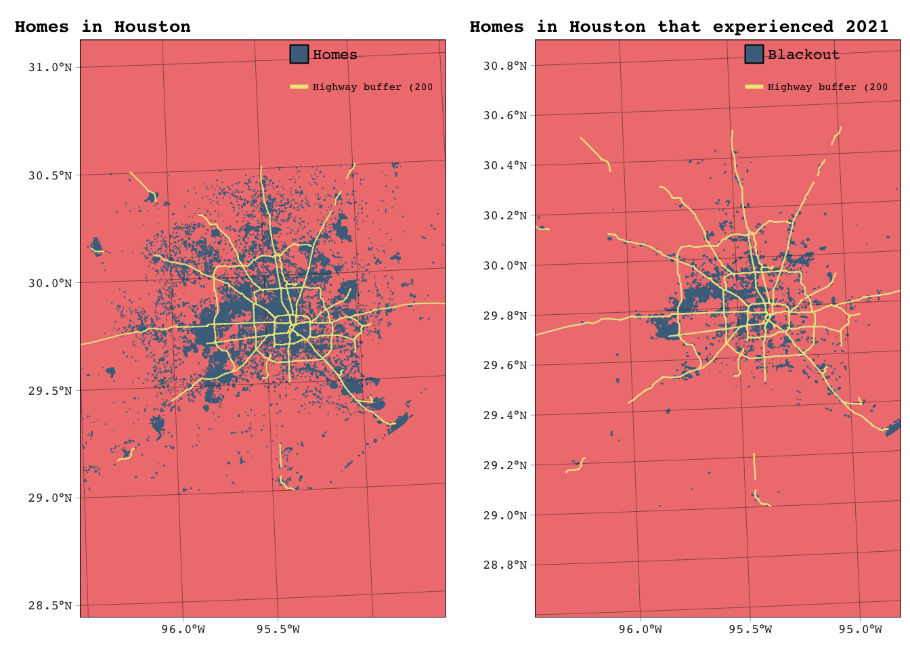
# rename the col in income to match that of census
income <- rename(income,"GEOID_Data" = "GEOID")# perform left join using col "GEOID_Data"
census_geom<- left_join(income,census, by = "GEOID_Data")# check census_geom matches houston_crop crs
if(st_crs(houston_crop) == st_crs(census_geom)){ # set warning to check crs' match after transforming
print("crs match")
} else {
warning("crs do not match!")
} census_geom <- census_geom %>% # df to sf
st_as_sf()
class(census_geom) # check that class has changed [1] "sf" "data.frame"census_geom <- st_transform(census_geom, crs = st_crs(houston_crop)) # transform CRS to match# check census_geom now matches houston_crop
if(st_crs(houston_crop) == st_crs(census_geom)){ # set warning to check crs' match after transforming
print("crs match")
} else {
warning("crs do not match!")
} [1] "crs match"census_tract_blackout <- census_geom %>% # census tract matches to blackout_mask_poly
st_filter(houston_crop)
# get logical vector of intersections
census_tract_no_blackout_logical <- st_intersects(census_geom, houston_crop, sparse = FALSE)
# filter rows in census_geom where no match found
census_tract_no_blackout <- census_geom[rowSums(census_tract_no_blackout_logical) == 0, ]# tested two different ways to obtain median income
census_tract_blackout$income_median <- apply(census_tract_blackout[, 2:3045], 1, function(row) median(as.numeric(row), na.rm = TRUE))
census_tract_no_blackout <- census_tract_no_blackout %>%
rowwise() %>%
mutate(income_median = median(c_across(2:3045), na.rm = TRUE)) %>%
ungroup()# assign blackout status in new col to make it easier to make density plot
census_tract_blackout$blackout <- "Yes"
census_tract_no_blackout$blackout <- "No"
# combine both data frames by binding rows
combined_df <- bind_rows(census_tract_no_blackout, census_tract_blackout)
# create a plot comparing the distributions of median income by blackout status
density <- ggplot(combined_df, aes(x = income_median, fill = blackout)) +
geom_density(alpha = 0.6) + # Density plot to compare distributions
labs(
title = "Distribution of median household income for census tracts by blackout status",
x = "Median Income",
y = "Density"
) +
scale_fill_manual(values = c("Yes" = "lightyellow",
"No" = "indianred2")) +
scale_x_continuous(limits = c(0,35),
breaks = seq(0,35,by = 5)) +
theme_minimal() +
theme(text = element_text(family = "courier"))
density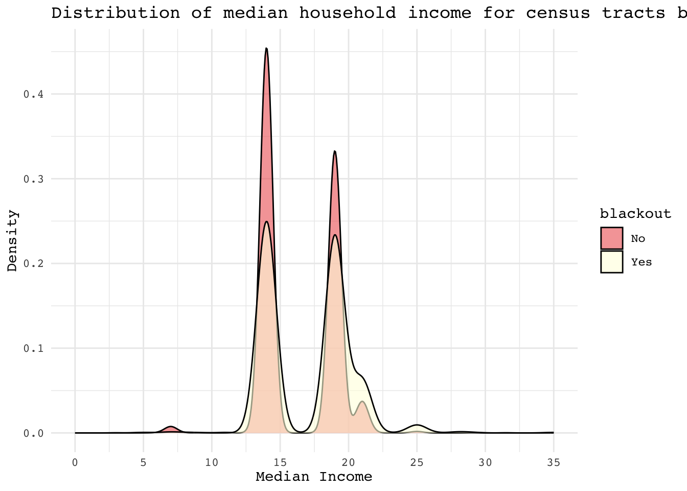
census_tract_blackout_map1 <- tm_shape(census_tract_no_blackout) +
tm_polygons(border.col = "black",
lwd = 0,
col = "income_median",
palette = rev(hcl.colors(7,"Batlow")),
title = "Household median income (12mo)") +
tm_shape(census_tract_blackout) +
tm_fill(border.col = "black",
lwd = 0,
col = "income_median",
palette = rev(hcl.colors(7,"Batlow")),
legend.show = FALSE) +
tm_layout(fontfamily = "courier",
main.title = "Houston census tracts' household median income",
bg.color = "lightblue",
outer.margins = c(0.01, 0.04, 0.01, 0.04),
inner.margins = 0,
main.title.fontface = "bold",
main.title.size = 0.85,
legend.title.size = 0.8,
legend.outside = TRUE,
legend.outside.position = c("right","TOP")) +
tm_graticules(col = "white",
lwd = 0.5,
alpha = 0.4)
census_tract_blackout_map1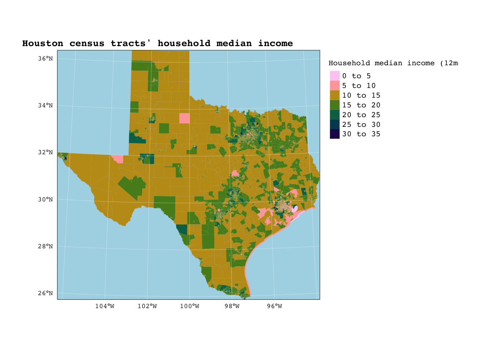
census_tract_blackout_map2 <- tm_shape(combined_df) +
tm_polygons(border.col = "black",
lwd = 0,
col = "income_median",
palette = rev(hcl.colors(7,"Batlow")),
title = "Household median income (last 12mo)") +
tm_shape(census_tract_blackout) +
tm_polygons(border.col = "black",
lwd = 0.3,
col = "black") +
tm_layout(fontfamily = "courier",
bg.color = "lightblue",
outer.margins = c(0.01, 0.04, 0.01, 0.04),
inner.margins = 0,
main.title.fontface = "bold",
main.title.size = 0.85,
legend.title.size = 0.8,
legend.outside = TRUE,
legend.outside.position = c("right","TOP")) +
tm_graticules(col = "white",
lwd = 0.5,
alpha = 0.4) +
tm_add_legend(type = "fill",
labels = "Blackout",
col = "black")
census_tract_blackout_map2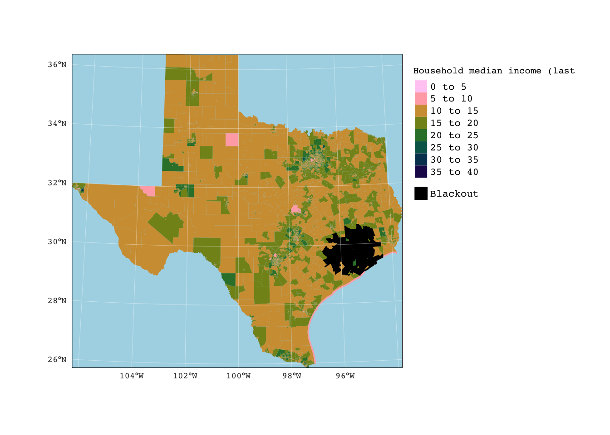
census_tract_blackout_map <- tm_shape(census_tract_blackout) +
tm_polygons(border.col = "black",
lwd = 0.3,
col = "income_median",
palette = rev(hcl.colors(7,"Batlow")),
title = "Household median income (last 12mo)") +
tm_layout(fontfamily = "courier",
main.title = "Houston census tracts that experienced 2021 blackout",
bg.color = "lightblue",
outer.margins = c(0.01, 0.04, 0.01, 0.04),
inner.margins = 0,
main.title.fontface = "bold",
main.title.size = 0.85,
legend.title.size = 0.5,
legend.text.size = 0.5,
legend.outside = TRUE,
legend.outside.position = c("right","TOP")) +
tm_graticules(col = "white",
lwd = 0.4,
alpha = 0.4)
census_tract_blackout_map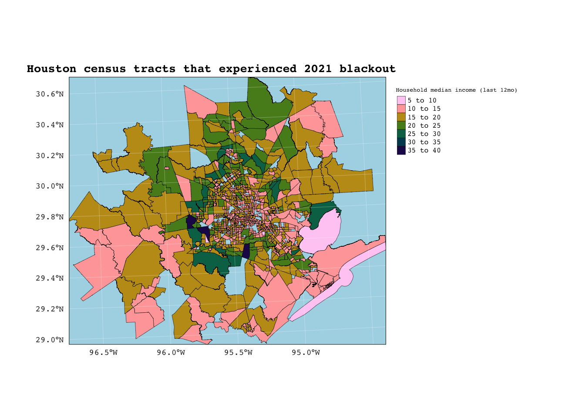
Reflection
My results show that most of the areas in Houston that experienced the blackout occurred in homes with median incomes on the lower end of the range. If we accept that the circumstances that led to the blackout in Texas, 2021 are a product of climate change, then my results mean that the effects of climate change are being felt disproportionately by lower income communities. However, we must consider that there are many limitations to the analysis I conducted. For starters, the census tract data used was from 2019 and the blackout occurred in 2021. Furthermore, there are many other factors that could have contributed to the blackout being experienced by households, and these were not explored.
Data Citations